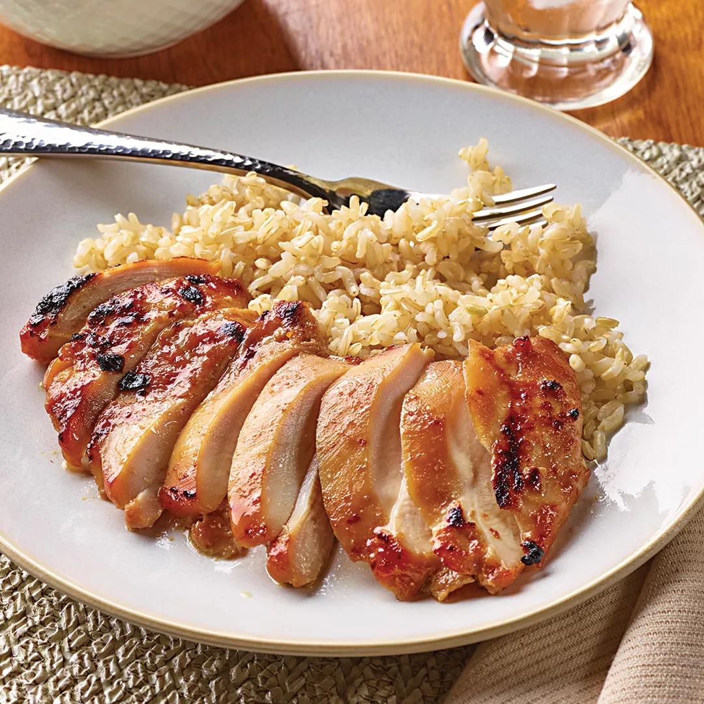

Miso Chicken (Wegmans)

Ingredients
- 1½–2 lb boneless skinless chicken thighs or breasts
- 1–2 tsp neutral oil (canola/veg/avocado) for the pan
- ¼ cup white miso paste (Hikari or similar – Wegmans sells it)
- 3 Tbsp Wegmans Sherry Cooking Wine
- 2 Tbsp soy sauce
- 1–2 Tbsp honey or brown sugar (start with 1 Tbsp; add more if you remember it being sweeter)
- 1 Tbsp rice vinegar (or apple cider vinegar in a pinch)
- 1 Tbsp toasted sesame oil
- 2 tsp fresh grated ginger
- 2 tsp minced garlic
- 1–2 tsp sriracha or a pinch of red pepper flakes (optional, for a slight kick)
- 2–3 Tbsp water, to thin the marinade if it’s very thick
Directions
- 1 Prep the chicken 2 Pat chicken dry and trim any big fat pieces. 3 If using breasts, you can lightly pound them to an even thickness so they cook evenly. 4 Make the miso–sherry marinade 5 In a bowl, whisk together: 6 Miso, sherry cooking wine, soy sauce, honey/brown sugar, rice vinegar, sesame oil, ginger, garlic, and optional chili. 7 If it’s paste-y, whisk in 2–3 Tbsp water until it’s pourable but still thick enough to cling to the chicken. 8 Add chicken to a zip bag or shallow dish and coat thoroughly in the marinade. 9 Marinate at least 30 minutes (room temp) or up to 8 hours in the fridge. 10 Because Wegmans sherry cooking wine is salted, don’t add extra salt yet; you can adjust at the end. 11 Cook – oven method (most Wegmans-like) 12 Preheat the oven to 400°F. 13 Lightly oil a baking dish or sheet pan. 14 Arrange chicken in a single layer, leaving a little space between pieces. 15 Spoon some extra marinade over the top (discard the rest once it’s touched raw chicken). 16 Bake: 17 Thighs: ~20–25 minutes 18 Breasts: ~18–22 minutes 19 …or until internal temp hits 165°F. 20 If you want a bit of caramelization like a prepared-foods entree, switch to broil for 2–3 minutes at the end, watching closely so the miso/sugar doesn’t burn. 21 Rest & finish 22 Let chicken rest 5 minutes. 23 Taste a little piece. If it needs more brightness, hit it with: 24 a splash of sherry cooking wine (just a few drops on the cooked chicken), or 25 a squeeze of lemon. 26 Garnish with scallions and sesame seeds. 27 Serve 28 Serve over rice with broccoli or your favorite veg, spooning any pan juices over the top.